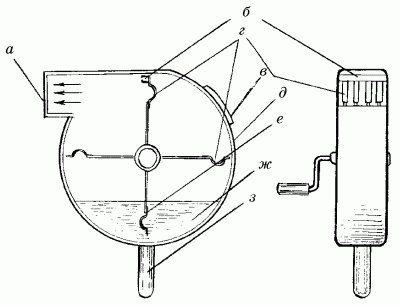

Отделка стен декоративно-штукатурной смесью.

Пожалуй, даже тот, кто предъявляет самые высокие требования к интерьеру своего дома, останется доволен, если стены его квартиры будут отделаны декоративно-штукатурными смесями. Привлекательный внешний вид готовых покрытий, разнообразие их цветов и фактуры – вот основные достоинства декоративной штукатурки.
Декоративно-штукатурные смеси представляют собой штукатурку с различными минеральными добавками, которые придают поверхностям стен оригинальность и декоративность.
Среди смесей такого типа самыми популярными считаются «Байра-микс», «Диамант», «Версажель», «Декодекор», а также различные итальянские смеси типа «венецианской штукатурки», имитирующие мрамор или перламутр. Сухие смеси, изготовленные на основе натуральных минералов, обеспечивают хорошую паропроницаемость стен, способствуют естественному испарению влаги через штукатурку и стены, предохраняют ее от образования плесени и поражения бактериями. Благодаря широкой цветовой гамме покрытия из декоративных штукатурок соответствуют требованиям современного дизайна, а некоторые из них, например «венецианская штукатурка», изготовленная на основе известкового молока и терракотовых гранул, по своему внешнему виду напоминает отделку, выполняемую в прошлые века в европейских замках и особняках.
Все остальные декоративно-штукатурные смеси по способу нанесения ничем не отличаются от упомянутых выше.
Итак, декоративная штукатурка «Байра-микс» – уже готовая к употреблению смесь для окончательной (или, как часто говорится в аннотации к раствору, финишной) отделки стен. Это универсальное покрытие можно использовать как для внутренних, так и для наружных работ.
«Байра-микс» представляет собой необыкновенно пластичный состав, который очень удобен в работе. Будучи нанесенным на стену, он способен подчеркнуть достоинства и скрыть недостатки помещения, а кроме того, такое покрытие для стен может гармонировать с любым интерьером благодаря широкому спектру имеющихся в ассортименте оттенков. Перед началом работ поверхность стены нуждается в грунтовании. Для этого следует использовать только специальные огрунтовочные составы – грунты на акриловой основе «Tifen-грунт», «LFMN», «Joby-LF». Обычные грунтовки для этой цели не подойдут. После того как слой грунта подсохнет, с помощью шпателя и пластиковой терки раствор наносится на стену и затирается круговыми движениями. После высыхания покрытие даже можно мыть – оно является влагостойким. Между тем некоторые фирмы-производители рекомендуют покрывать стены всевозможными защитными растворами или, по желанию, специальными составами, обеспечивающими водоотталкивающий эффект.
Декоративная штукатурка «Деко-декор» разводится и наносится на стену аналогично.
Состав «Диамант» наносится на стену, предварительно огрунтованную указанными выше составами и оштукатуренную. Смесь накладывают на стену широким 30-сантиметровым пластиковым шпателем и затем затирают пластиковой теркой. В зависимости от структуры материала толщина слоя наносимого материала колеблется от 2 до 4 мм. Покрытие высыхает в течение 3 часов и приобретает светло-серый оттенок. После этого можно покрасить его в любой цвет.
Декоративная штукатурка «Версажель» представляет собой мелкозернистый материал на акриловой основе. Прежде чем приступить к работе, следует тщательно подготовить поверхность стен: обеспылить, удалить грязные и масляные пятна (если таковые имеются) и хорошо промыть горячей водой с мылом. После этого нужно оставить стену для высыхания при комнатной температуре. Не стоит пользоваться для этой цели электронагревательными приборами: высыхание должно происходить равномерно.
После этого нужно загрунтовать стену специальным огрунтовочным составом «Версафикс». Перед его применением следует внимательно прочитать приложенную к нему аннотацию: для обработки разных поверхностей рекомендуется различная толщина грунтового слоя. После проведения огрунтовки можно приступать к описанной выше технике нанесения декоративной штукатурки.
Если вы считаете, что приобретение готовых сухих декоративно-штукатурных смесей обойдется слишком дорого, то можно применить другие способы отделки, с помощью которых получаются не менее красивые покрытия для стен. Очень декоративно будут выглядеть стены комнаты, покрытые тонким слоем мелкодробленого стекла, крошки из цветного камня или морских ракушек. Кроме того, такие покрытия довольно прочны и долговечны, если вся работа выполнена правильно.
На предварительно оштукатуренную стену наносится тонкий слой полимерцементной подложки, представляющей собой раствор из замешанного до густоты сметаны клея ПВА (вместо него можно также использовать водно-дисперсионную краску ВД-ВА-129) и цемента марки 400. Если все-таки решено использовать клей ПВА, то для приготовления подложки на 10 кг цемента добавляют 350 г клея и требуемое количество воды. Приготовленный раствор нужно нанести на стену с помощью пульверизатора и тотчас же при помощи губки покрыть стену декоративной крошкой.
Конечно, применение пульверизатора значительно облегчает задачу, ведь при его отсутствии пришлось бы вручную набрызгивать полимерцементную подложку, а делать это нужно очень быстро, потому что раствор будет слишком быстро схватываться. Можно воспользоваться также специальным устройством, называемым кружкой. В эту кружку наливают раствор и, подведя к ней сжатый воздух, набрызгивают раствор на стену. При этом следует помнить, что для работы потребуется еще и компрессор.
Если же использование такого устройства представляется проблематичным, можно изготовить приспособление для набрызга и в домашних условиях. Оно представляет собой корпус, сделанный из листового железа, в который помещен металлический 5-лопастный ротор, вращающийся с помощью рукоятки. На концах этих лопастей находятся захваты, которые при вращении разбрызгивают раствор через выходное отверстие корпуса. Сбоку в корпусе есть отверстие для заполнения раствора, а снизу – ручка (рис. 33).

Рис. 33. Приспособление для набрызга декоративной штукатурки: а – выходное отверстие; б – упор; в – отверстие для заливки раствора; г – захваты; д – корпус; е – ротор; ж – раствор; з – ручка.
После разбрызгивания раствора с помощью подобного приспособления стена приобретает довольно оригинальную, слегка волнистую поверхность. Отделка, выполненная с помощью таких декоративных материалов, не требует тщательной затирки в конце работы.